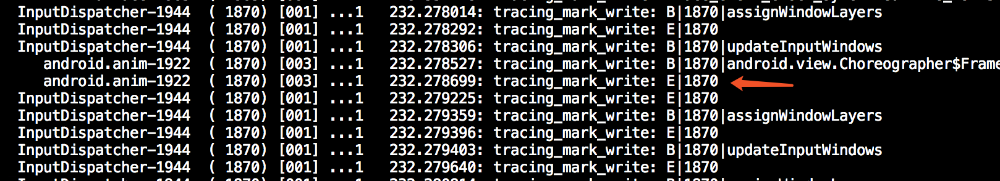

- 00 导读 如何打造高质量的应用？.md
- 00 开篇词 焦虑的移动开发者该如何破局？.md
- 01 崩溃优化（上）：关于“崩溃”那些事儿.md
- 02 崩溃优化（下）：应用崩溃了，你应该如何去分析？.md
- 03 内存优化（上）：4GB内存时代，再谈内存优化.md
- 04 内存优化（下）：内存优化这件事，应该从哪里着手？.md
- 05 卡顿优化（上）：你要掌握的卡顿分析方法.md
- 06 卡顿优化（下）：如何监控应用卡顿？.md
- 06补充篇 卡顿优化：卡顿现场与卡顿分析.md
- 07 启动优化（上）：从启动过程看启动速度优化.md
- 08 启动优化（下）：优化启动速度的进阶方法.md
- 09 I_O优化（上）：开发工程师必备的I_O优化知识.md
- 10 I_O优化（中）：不同I_O方式的使用场景是什么？.md
- 11 I_O优化（下）：如何监控线上I_O操作？.md
- 12 存储优化（上）：常见的数据存储方法有哪些？.md
- 13 存储优化（中）：如何优化数据存储？.md
- 14 存储优化（下）：数据库SQLite的使用和优化.md
- 15 网络优化（上）：移动开发工程师必备的网络优化知识.md
- 16 网络优化（中）：复杂多变的移动网络该如何优化？.md
- 17 网络优化（下）：大数据下网络该如何监控？.md
- 18 耗电优化（上）：从电量优化的演进看耗电分析.md
- 19 耗电优化（下）：耗电的优化方法与线上监控.md
- 20 UI 优化（上）：UI 渲染的几个关键概念.md
- 21 UI 优化（下）：如何优化 UI 渲染？.md
- 22 包体积优化（上）：如何减少安装包大小？.md
- 23 包体积优化（下）：资源优化的进阶实践.md
- 24 想成为Android高手，你需要先搞定这三个问题.md
- 25 如何提升组织与个人的研发效能？.md
- 26 关于编译，你需要了解什么？.md
- 27 编译插桩的三种方法：AspectJ、ASM、ReDex.md
- 28 大数据与AI，如何高效地测试？.md
- 29 从每月到每天，如何给版本发布提速？.md
- 30 数据评估（上）：如何实现高可用的上报组件？.md
- 31 数据评估（下）：什么是大数据平台？.md
- 32 线上疑难问题该如何排查和跟踪？.md
- 33 做一名有高度的移动开发工程师.md
- 34 聊聊重构：优秀的架构都是演进而来的.md
- 35 Native Hook 技术，天使还是魔鬼？.md
- 36 跨平台开发的现状与应用.md
- 37 移动开发新大陆：工作三年半，移动开发转型手游开发.md
- 38 移动开发新大陆：Android音视频开发.md
- 39 移动开发新大陆： 边缘智能计算的趋势.md
- 40 动态化实践，如何选择适合自己的方案？.md
- 41 聊聊Flutter，面对层出不穷的新技术该如何跟进？.md
- 42 Android开发高手课学习心得.md
- Android JVM TI机制详解（内含福利彩蛋）.md
- Android工程师的“面试指南”.md
- Native下如何获取调用栈？.md
- 专栏学得苦？可能你还需要一份配套学习书单.md
- 专栏学得苦？可能是方法没找对.md
- 程序员修炼之路 设计能力的提升途径.md
- 练习Sample跑起来 ASM插桩强化练习.md
- 练习Sample跑起来 唯鹿同学的练习手记 第1辑.md
- 练习Sample跑起来 唯鹿同学的练习手记 第2辑.md
- 练习Sample跑起来 唯鹿同学的练习手记 第3辑.md
- 练习Sample跑起来 热点问题答疑第1期.md
- 练习Sample跑起来 热点问题答疑第2期.md
- 练习Sample跑起来 热点问题答疑第3期.md
- 练习Sample跑起来 热点问题答疑第4期.md
- 结束语 移动开发的今天和明天.md
- 聊聊Framework的学习方法.md
练习Sample跑起来 热点问题答疑第3期
你好，我是孙鹏飞。又到了答疑的时间，今天我将围绕卡顿优化这个主题，和你探讨一下专栏第6期和补充篇的两个Sample的实现。
专栏第6期的Sample完全来自于Facebook的性能分析框架Profilo，主要功能是收集线上用户的atrace日志。关于atrace相信我们都比较熟悉了，平时经常使用的systrace工具就是封装了atrace命令来开启ftrace事件，并读取ftrace缓冲区生成可视化的HTML日志。这里多说一句，ftrace是Linux下常用的内核跟踪调试工具，如果你不熟悉的话可以返回第6期文稿最后查看ftrace的介绍。Android下的atrace扩展了一些自己使用的categories和tag，这个Sample获取的就是通过atrace的同步事件。
Sample的实现思路其实也很简单，有两种方案。
第一种方案：hook掉atrace写日志时的一系列方法。以Android 9.0的代码为例写入ftrace日志的代码在trace-dev.cpp里，由于每个版本的代码有些区别，所以需要根据系统版本做一些区分。
第二种方案：也是Sample里所使用的方案，由于所有的atrace event写入都是通过/sys/kernel/debug/tracing/trace_marker，atrace在初始化的时候会将该路径fd的值写入atrace_marker_fd全局变量中，我们可以通过dlsym轻易获取到这个fd的值。关于trace_maker这个文件我需要说明一下，这个文件涉及ftrace的一些内容，ftrace原来是内核的事件trace工具，并且ftrace文档的开头已经写道
Ftrace is an internal tracer designed to help out developers and designers of systems to find what is going on inside the kernel.
从文档中可以看出来，ftrace工具主要是用来探查outside of user-space的性能问题。不过在很多场景下，我们需要知道user space的事件调用和kernel事件的一个先后关系，所以ftrace也提供了一个解决方法，也就是提供了一个文件trace_marker，往该文件中写入内容可以产生一条ftrace记录，这样我们的事件就可以和kernel的日志拼在一起。但是这样的设计有一个不好的地方，在往文件写入内容的时候会发生system call调用，有系统调用就会产生用户态到内核态的切换。这种方式虽然没有内核直接写入那么高效，但在很多时候ftrace工具还是很有用处的。
由此可知，用户态的事件数据都是通过trace_marker写入的，更进一步说是通过write接口写入的，那么我们只需要hook住write接口并过滤出写入这个fd下的内容就可以了。这个方案通用性比较高，而且使用PLT Hook即可完成。
下一步会遇到的问题是，想要获取atrace的日志，就需要设置好atrace的category tag才能获取到。我们从源码中可以得知，判断tag是否开启，是通过atrace_enabled_tags & tag来计算的，如果大于0则认为开启，等于0则认为关闭。下面我贴出了部分atrace_tag的值，你可以看到，判定一个tag是否是开启的，只需要tag值的左偏移数的位值和atrace_enabled_tags在相同偏移数的位值是否同为1。其实也就是说，我将atrace_enabled_tags的所有位都设置为1，那么在计算时候就能匹配到任何的atrace tag。
#define ATRACE_TAG_NEVER 0
#define ATRACE_TAG_ALWAYS (1<<0)
#define ATRACE_TAG_GRAPHICS (1<<1)
#define ATRACE_TAG_INPUT (1<<2)
#define ATRACE_TAG_VIEW (1<<3)
#define ATRACE_TAG_WEBVIEW (1<<4)
#define ATRACE_TAG_WINDOW_MANAGER (1<<5)
#define ATRACE_TAG_ACTIVITY_MANAGER (1<<6)
#define ATRACE_TAG_SYNC_MANAGER (1<<7)
#define ATRACE_TAG_AUDIO (1<<8)
#define ATRACE_TAG_VIDEO (1<<9)
#define ATRACE_TAG_CAMERA (1<<10)
#define ATRACE_TAG_HAL (1<<11)
#define ATRACE_TAG_APP (1<<12)
下面是我用atrace抓下来的部分日志。

看到这里有同学会问，Begin和End是如何对应上的呢？要回答这个问题，首先要先了解一下这种记录产生的场景。这个日志在Java端是由Trace.traceBegin和Trace.traceEnd产生的，在使用上有一些硬性要求：这两个方法必须成对出现，否则就会造成日志的异常。请看下面的系统代码示例。
void assignWindowLayers(boolean setLayoutNeeded) {
2401 Trace.traceBegin(Trace.TRACE_TAG_WINDOW_MANAGER, "assignWindowLayers");//关注此处事件开始代码
2402 assignChildLayers(getPendingTransaction());
2403 if (setLayoutNeeded) {
2404 setLayoutNeeded();
2405 }
2406
2411 scheduleAnimation();
2412 Trace.traceEnd(Trace.TRACE_TAG_WINDOW_MANAGER);//事件结束
2413 }
2414
所以我们可以认为B下面紧跟的E就是事件的结束标志，但很多情况下我们会遇到上面日志中所看到的两个B连在一起，紧跟的两个E我们不知道分别对应哪个B。此时我们需要看一下产生事件的CPU是哪个，并且看一下产生事件的task_pid是哪个，也就是最前面的InputDispatcher-1944，这样我们就可以对应出来了。
接下来我们一起来看看补充篇的Sample，它的目的是希望让你练习一下如何监控线程创建，并且打印出创建线程的Java方法。Sample的实现比较简单，主要还是依赖PLT Hook来hook线程创建时使用的主要函数pthread_create。想要完成这个Sample你需要知道Java线程是如何创建出来的，并且还要理解Java线程的执行方式。需要特别说明的是，其实这个Sample也存在一个缺陷。从虚拟机的角度看，线程其实又分为两种，一种是Attached线程，我习惯按照.Net的叫法称其为托管线程；一种是Unattached线程，为非托管线程。但底层都是依赖POSIX Thread来实现的，从pthread_create里无法区分该线程是否是托管线程，也有可能是Native直接开启的线程，所以有可能并不能对应到创建线程时候的Java Stack。
关于线程，我们在日常监控中可能并不太关心线程创建时候的状况，而区分线程可以通过提前设置Thread Name来实现。举个例子，比如在出现OOM时发现是发生在pthread_create执行的时候，说明当前线程数可能过多，一般我们会在OOM的时候采集当前线程数和线程堆栈信息，可以看一下是哪个线程创建过多，如果指定了线程名称则很快就能查找出问题所在。
对于移动端的线程来说，我们大多时候更关心的是主线程的执行状态。因为主线程的任何耗时操作都会影响操作界面的流畅度，所以我们经常把看起来比较耗时的操作统统都往子线程里面丢，虽然这种操作虽然有时候可能很有效，但还可能会产生一些我们平时很少遇到的异常情况。比如我曾经遇到过，由于用户手机的I/O性能很低，大量的线程都在wait io；或者线程开启的太多，导致线程Context switch过高；又或者是一个方法执行过慢，导致持有锁的时间过长，其他线程无法获取到锁等一系列异常的情况，
虽然线程的监控很不容易，但并不是不能实现，只是实现起来比较复杂并且要考虑兼容性。比如我们可能比较关心一个Lock当前有多少线程在等待锁释放，就需要先获取到这个Object的MirrorObject，然后构造一个MonitorInfo，之后获取到waiters的列表，而这个列表里就存储了等待锁释放的线程。你看其实过程也并不复杂，只是在计算地址偏移量的时候需要做一些处理。
当然还有更细致的优化，比如我们都知道Java里是有轻量级锁和重量级锁的一个转换过程，在ART虚拟机里被称为ThinLocked和FatLocked，而转换过程是通过Monitor::Inflate和Monitor::Deflate函数来实现的。此时我们可以监控Monitor::Inflate调用时monitor指向的Object，来判断是哪段代码产生了“瘦锁”到“胖锁”转换的过程，从而去做一些优化。接下来要做优化，需要先知晓ART虚拟机锁转换的机制，如果当前锁是瘦锁，持有该锁的线程再一次获取这个锁只递增了lock count，并未改变锁的状态。但是lock count超过4096则会产生瘦锁到胖锁的转换，如果当前持有该锁的线程和进入MontorEnter的线程不是同一个的情况下就会产生锁争用的情况。ART虚拟机为了减少胖锁的产生做了一些优化，虚拟机先通过sched_yield让出当前线程的执行权，操作系统在后面的某个时间再次调度该线程执行，从调用sched_yield到再次执行的时候计算时间差，在这个时间差里占用该锁的线程可能会释放对锁的占用，那么调用线程会再次尝试获取锁，如果获取锁成功的话则会从 Unlocked状态直接转换为ThinLocked状态，不会产生FatLocked状态。这个过程持续50次，如果在50次循环内无法获取到锁则会将瘦锁转为胖锁。如果我们对某部分的多线程代码性能敏感，则希望锁尽量持续在瘦锁的状态，我们可以减少同步块代码的粒度，尽量减少很多线程同时争抢锁，可以监控Inflate函数调用情况来判断优化效果。
最后，还有同学对在Crash状态下获取Java线程堆栈的方法比较感兴趣，我在这里简单讲一下，后面会有专门的文章介绍这部分内容。
一种方案是使用ThreadList::ForEach接口间接实现，具体的逻辑可以看这里。另一种方案是 Profilo里的Unwinder机制，这种实现方式就是模拟StackVisitor的逻辑来实现。
这两期反馈的问题不多，答疑的内容也可以算作对正文的补充，如果有同学想多了解虚拟机的机制或者其他性能相关的问题，欢迎你给我留言，我也会在后面的文章和你聊聊这些话题，比如有同学问到的ART下GC的详细逻辑之类的问题。
相关资料
福利彩蛋
今天为认真提交作业完成练习的同学，送出第二波“学习加油礼包”。@Seven同学提交了第5期的作业，送出“极客周历”一本，其他同学如果完成了练习千万别忘了通过Pull request提交哦。
欢迎你点击“请朋友读”，把今天的内容分享给好友，邀请他一起学习。
© 2019 - 2023 Liangliang Lee. Powered by gin and hexo-theme-book.